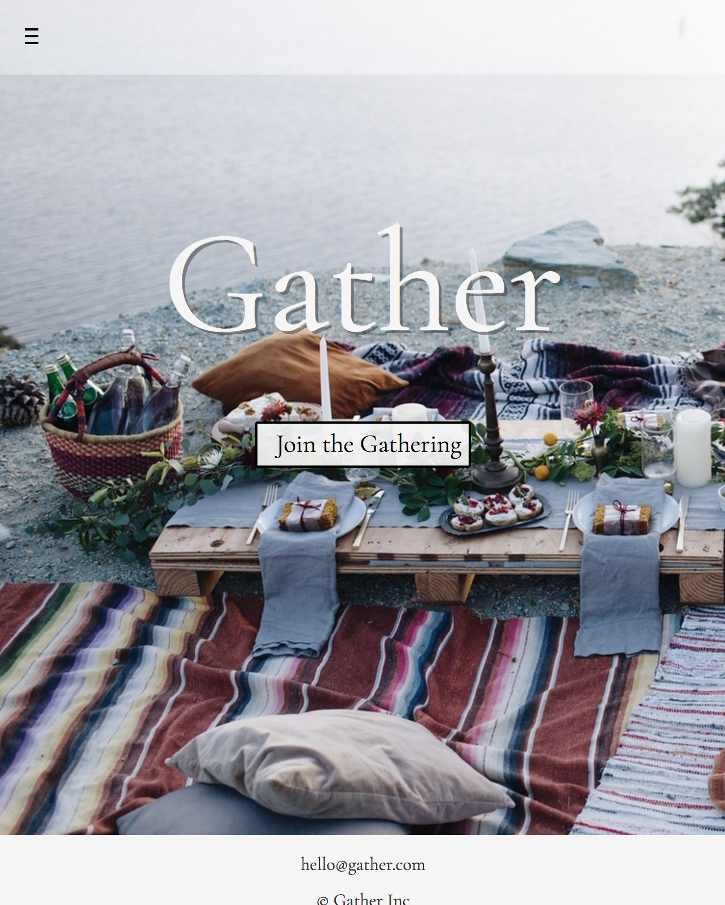
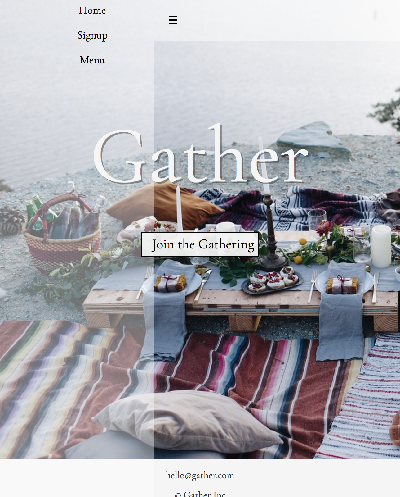
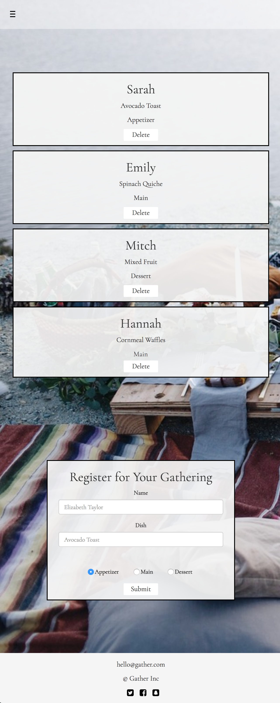
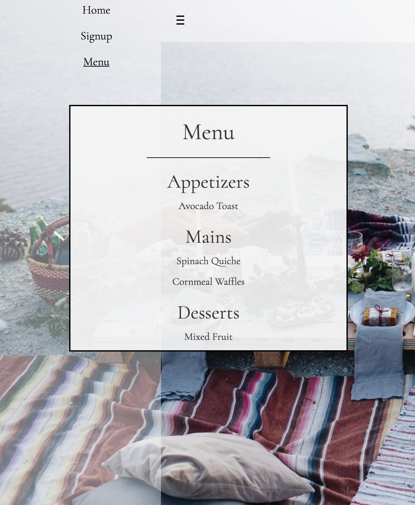

Design Question
How can we organize potluck contributions to ensure unique complementary dishes?
Design Values
- Look and feel of a lifestyle blog
- Straightforward
- Easy to use
Tech Stack
- Node backend
- Mongo data store via mLab
- Express web server
Design Process and User Flow
The design question I sought to answer was "how can we organize potluck contributions to ensure unique complementary dishes?". To respond to this I sought out to create dynamic web application in order to allow guests to sign up and delete dishes to bring to a potluck.

A complex background image was chosen in order to help the user imagine the detail oriented potluck which Gather would help them organize. The colors are meant to be soothing while the user imagines themselves surrounded by nature, escaping daily life. The join button is welcoming, and gives users a sense of belonging.

As the user registers they enter their name, dish, and catagorize it as an "appetizer", "main", or "dessert". After the form is submitted, a card is posted above which allows them to delete their entry should they change their mind.

Dishes are filtered into the menu by their "appetizer", "main", or "dessert" tags. The menu page creates a clear layout for guests and hosts to ensure that the dishes are complementary and properly distributed between catagories.
Although this application should be available through the browser, the most common use case would be millenials on the go. It was crucial that the mobile experience was just as elegent and simple to use.
A hamburger menu allows the user to navigate to other pages. By extending the full height of the page, the menu attracts the user's attention.
The registration form remains on the bottom of the screen and the cards stack in order to keep the app flow clear for users.
Finally, the user is able to access the menu from their mobile device enabling them to easily manage their gathering.